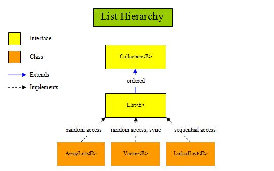

Collection Framework in java is a centralized and unified theme to store and manipulate the group of objects. Java Collection Framework provides some pre-defined classes and interfaces to handle the group of objects. Using collection framework, you can store the objects as a list or as a set or as a queue or as a map and perform operations like adding an object or removing an object or sorting the objects without much hard work.
e➝ extends, I➝ implements
The utility package, (java.util) contains all the classes and interfaces that are required by the
collection framework. The collection framework contains an interface named an iterable interface
which provides the iterator to iterate through all the collections. This interface is extended by
the main collection interface which acts as a root for the collection framework. All the collections
extend this collection interface thereby extending the properties of the iterator and the methods of
this interface. The given figure illustrates the hierarchy of the collection framework.
This is a child interface of the collection interface. This interface is dedicated to the data of the list type in which we can store all the ordered collection of the objects. This also allows duplicate data to be present in it. This list interface is implemented by various classes like ArrayList, Vector, Stack, etc. Since all the subclasses implement the list, we can instantiate a list object with any of these classes.
Here are some properties of lists
Java List Methods
| Modifier & Type | Method | Description |
|---|---|---|
| boolean | add(E e) | Appends the specified element to the end of this list (optional operation). |
| void | add(int index, E element) | Inserts the specified element at the specified position in this list (optional operation). |
| boolean | addAll(Collection <? extends E> c) | Appends all of the elements in the specified collection to the end of this list, in the order that they are returned by the specified collection's iterator. |
| boolean | addAll(int index, Collection<? extends E> c) | Inserts all of the elements in the specified collection into this list at the specified position. |
| void | clear() | Removes all of the elements from this list. |
| boolean | contains(Object o) | Returns true if this list contains the specified element. |
| boolean | containsAll(Collection<?> c) | Returns true if this list contains all of the elements of the specified collection. |
| boolean | equals(Object o) | Compares the specified object with this list for equality. |
| E | get(int index) | Returns the element at the specified position in this list. |
| int | indexOf(Object o) | Returns the index of the first occurrence of the specified element in this list, or -1 if this list does not contain the element. |
| boolean | isEmpty() | Returns true if this list contains no elements. |
| Iterator <E> | iterator() | Returns an iterator over the elements in this list in proper sequence. |
| ListIterator <E> | listIterator(int index) | Returns a list iterator over the elements in this list (in proper sequence), starting at the specified position in the list. |
| E | remove(int index) | Removes the element at the specified position in this list (optional operation). |
| boolean | remove(Object o) | Removes the first occurrence of the specified element from this list, if it is present. |
| boolean | removeAll(Collection<?> c) | Removes from this list all of its elements that are contained in the specified collection |
| default void | replaceAll(UnaryOperator<E> operator) | Replaces each element of this list with the result of applying the operator to that element. |
| boolean | retainAll(Collection<?> c) | Retains only the elements in this list that are contained in the specified collection. |
| E | set(int index, E element) | Replaces the element at the specified position in this list with the specified element. |
| int | size() | Returns the number of elements in this list. |
| default void | sort(Comparator<? super E> c) | Sorts this list according to the order induced by the specified Comparator. |
| default Spliterator<E> | spliterator() | Creates a Spliterator over the elements in this list. |
| List<E> | subList(int fromIndex, int toIndex) | Returns a view of the portion of this list between the specified fromIndex, inclusive, and toIndex, exclusive. |
| Object[] | toArray() | Returns an array containing all of the elements in this list in proper sequence. |
ArrayList, in simple terms, can be defined as re-sizable array. ArrayList is same like normal array
but it can grow and shrink dynamically to hold any number of elements. ArrayList is a sequential
collection of objects which increases or decreases in size as we add or delete the elements.
Following are few key points to note about ArrayList:
Create an ArrayList object called name that will store strings:
import java.util.ArrayList; // import the ArrayList class
ArrayList<String> nameList = new ArrayList<String>(); //
Create an ArrayList object
Add elements to the ArrayList useing the add() method
import java.util.ArrayList;
public class Main {
public static void main(String[] args) {
ArrayList<String> nameList = new ArrayList<String>();
cars.add("Hasan");
cars.add("Shafayet");
cars.add("Abir");
}
}
Output: [Hasan, Shafayet, Abir]
Access elements to the ArrayList useing the get() method
nameList.get(0);
Output: Hasan
Change elements to the ArrayList useing the set() method
nameList.set(0, "Lambda");
Output: [Lambda, Shafayet, Abir]
Find out size of the ArrayList useing the size() method
nameList.size();
Output: 3
Remove elements to the ArrayList useing the remove() method
nameList.remove(0);
Output: [Shafayet, Abir]
To remove all elements to the ArrayList useing the clear() method
nameList.clear();
Output: []
The LinkedList class in Java is an implementation of doubly linked list which can
be used both as a List as well as Queue. The LinkedList in java can have any type of elements
including null and duplicates. Elements can be inserted and can be removed from both the ends and
can be retrieved from any arbitrary position.
Following are some key points to note about LinkedList:
Some key differences between LinkedList and ArrayList:
| ArrayList | LinkedList |
|---|---|
| ArrayList Store the elements sequentially based on their index. | LinkdList uses a doubly-linkde list to store its elements. |
| ArrayList consumes less memory LinkedList | LinkedList consumes more memory than an ArrayList because it also stores the next and previous references along with the data. |
| You can access an element in an ArrayList in O(1) time. | it takes O(n) time to access an element in a LinkedList because it needs to traverse to the desired element by following the next/prev references. |
| Adding or removing elements are usually slower in an ArrayList compared to LinkedList. This is because the elements in the ArrayList needs to be shifted if a new element is added in the middle of the ArrayList. | Adding or removing elements are usually faster in an LinkedList compared to ArrayList. |
However, while the ArrayList class and the LinkedList class can be used in the same way, they are built very differently.
Create an LinkedList object called name that will store strings:
import java.util.LinkedList; // import the LinkedList class
LinkedList<String> nameList = new LinkedList<String>(); //
Create an LinkedList object
Add elements to the LinkedList useing the add() method
import java.util.LinkedList;
public class Main {
public static void main(String[] args) {
LinkedList<String> nameList = new LinkedList<String>();
cars.add("Hasan");
cars.add("Shafayet");
cars.add("Abir");
}
}
Output: [Hasan, Shafayet, Abir]
Access elements to the LinkedList useing the get() method
nameList.get(0);
Output: Hasan
Change elements to the LinkedList useing the set() method
nameList.set(0, "Lambda");
Output: [Lambda, Shafayet, Abir]
Find out size of the LinkedList useing the size() method
nameList.size();
Output: 3
Remove elements to the LinkedList useing the remove() method
nameList.remove(0);
Output: [Shafayet, Abir]
To remove all elements to the LinkedList useing the clear() method
nameList.clear();
Output: []
The Vector Class is also dynamically grow-able and shrink-able collection of objects like an
ArrayList class. But, the main difference between ArrayList and Vector is that Vector class is
synchronized. That means, only one thread can enter into vector object at any moment of time.
Vector class has same features as ArrayList. Vector class also extends
AbstractList class and
implements List interface. It also implements 3 marker interfaces – RandomAccess,
Cloneable and
Serializable.
Vector class is preferred over ArrayList class when you are developing a multi threaded application.
But, precautions need to be taken because vector may reduce the performance of your application as
it is thread safety and only one thread is allowed to have object lock at any moment of time and
remaining threads have to wait until a thread releases the object lock which is held by it. So, it
is always recommended that if you don’t need thread safety environment, it is better to use
ArrayList class than the Vector class.
Following are few key points to note about Vector:
A Queue is a First In First Out (FIFO) data structure.
The process of adding an element at the back of the Queue is called Enqueue, and the process of
removing an element from the front of the Queue is called Dequeue.
A priority queue in Java is a special type of queue wherein all the elements are ordered as per
their natural ordering or based on a custom Comparator supplied at the time of creation.
The front of the priority queue contains the least element according to the specified ordering, and
the rear of the priority queue contains the greatest element.
So when you remove an element from the priority queue, the least element according to the specified
ordering is removed first.
Java PriorityQueue Methods
| Modifier & Type | Method | Description |
|---|---|---|
| Constructors | PriorityQueue() | Creates a PriorityQueue with the default initial capacity (11) that orders its elements according to their natural ordering. |
| Constructors | PriorityQueue(Collection<? extends E> c) | StringCreates a PriorityQueue containing the elements in the specified collection. |
| Constructors | PriorityQueue(int initialCapacity, Comparator<? super E> comparator) | Creates a PriorityQueue with the specified initial capacity that orders its elements according to the specified comparator. |
| boolean | add(E e) | Inserts the specified element into this priority queue. |
| void | clear() | Removes all of the elements from this priority queue. |
| Comparator<? super E> | comparator() | Returns the comparator used to order the elements in this queue, or null if this queue is sorted according to the natural ordering of its elements. |
| boolean | contains(Object o) | Returns true if this queue contains the specified element. |
| Iterator<E> | iterator() | Returns an iterator over the elements in this queue. |
| boolean | offer(E e) | Inserts the specified element into this priority queue. |
| E | peek() | Retrieves, but does not remove, the head of this queue, or returns null if this queue is empty. |
| E | poll() | Retrieves and removes the head of this queue, or returns null if this queue is empty. |
| boolean | remove(Object o) | Removes a single instance of the specified element from this queue, if it is present. |
| int | size() | Returns the number of elements in this collection. |
| Object[] | toArray() | Returns an array containing all of the elements in this queue. |
Creating a Priority Queue
Create a PriorityQueue of integers and add some integers to it. After adding the integers, we’ll
remove them
one by one from the priority queue and see how the smallest integer is removed first followed by the
next smallest integer and so on.
import java.util.PriorityQueue;
public class CreatePriorityQueueExample {
public static void main(String[] args) {
// Create a Priority Queue
PriorityQueue<Integer> numbers = new PriorityQueue<>();
// Add items to a Priority Queue (ENQUEUE)
numbers.add(750);
numbers.add(500);
numbers.add(900);
numbers.add(100);
// Remove items from the Priority Queue (DEQUEUE)
while (!numbers.isEmpty()) {
System.out.println(numbers.remove());
}
}
}
Output:
100
500
750
900
Creating a Priority Queue with a custom Comparator
import java.util.Comparator;
import java.util.PriorityQueue;
public class PriorityQueueCustomComparatorExample {
public static void main(String[] args) {
// A custom comparator that compares two Strings by their length.
//using lambda expression like this =>
Comparator<String> stringLengthComparator = (s1, s2) -> {
return s1.length() - s2.length();};
// Create a Priority Queue with a custom Comparator
PriorityQueue<String> namePriorityQueue = new
PriorityQueue<>(stringLengthComparator);
// Add items to a Priority Queue (ENQUEUE)
namePriorityQueue.add("Lisa");
namePriorityQueue.add("Robert");
namePriorityQueue.add("John");
namePriorityQueue.add("Chris");
namePriorityQueue.add("Angelina");
namePriorityQueue.add("Joe");
// Remove items from the Priority Queue (DEQUEUE)
while (!namePriorityQueue.isEmpty()) {
System.out.println(namePriorityQueue.remove());
}}
}
Output:
Joe
John
Lisa
Chris
Robert
Angelina
A set is an unordered collection of objects in which duplicate values cannot be stored. This
collection is used when we wish to avoid the duplication of the objects and wish to store only the
unique objects. This set interface is implemented by various classes like HashSet, TreeSet,
LinkedHashSet, etc. Since all the subclasses implement the set, we can instantiate a set object with
any of these classes.
Use set for storing unique object in random order.
Methods of Set
| Modifier & Type | Method | Description |
|---|---|---|
| int | size() | Returns the number of elements in the set. |
| boolean | isEmpty() | Checks whether the set is empty or not. |
| boolean | contains(Object o) | Checks whether this set has specified element. |
| Iterator<E> | iterator() | Returns an iterator over the set. |
| Object[] | toArray() | It returns an array containing all elements of the set. |
| boolean | add(E e) | This method adds specified element to this set only if that element doesn’t present already. |
| boolean | remove(Object o) | Removes the specified element from this set. |
| boolean | containsAll(Collection<?> c) | It checks whether this set contains all elements of passed collection. |
| boolean | addAll(Collection<? extends E> c) | Adds all elements of the passed collection to this set if they are not already present. |
| boolean | removeAll(Collection<?> c) | Removes all elements of this set which are also elements of passed collection. |
| boolean | retainAll(Collection<?> c) | Retains only those elements in this set which are also elements of passed collection. |
| void | clear() | Removes all elements in this set |
| boolean | equals(Object o) | Compares the specified object with this set for equality. |
The HashSet class in Java is an implementation of Set interface. HashSet is a collection of objects
which contains only unique elements. Duplicates are not allowed in HashSet. HashSet gives constant
time performance for insertion, removal and retrieval operations. It allows only one null
element.
The HashSet internally uses HashMap to store the objects.
Few key points to note about HashSet:
Creating a HashSet and adding new elements to it.
import java.util.HashSet;
import java.util.Set;
public class CreateHashSetExample {
public static void main(String[] args) {
// Creating a HashSet
Set
// Adding new elements to the HashSet
daysOfWeek.add("Monday");
daysOfWeek.add("Tuesday");
daysOfWeek.add("Wednesday");
daysOfWeek.add("Thursday");
daysOfWeek.add("Friday");
daysOfWeek.add("Saturday");
daysOfWeek.add("Sunday");
// Adding duplicate elements will be ignored
daysOfWeek.add("Monday");
System.out.println(daysOfWeek);
}}
#Output:
[Monday, Thursday, Friday, Sunday, Wednesday, Tuesday, Saturday]
The LinkedHashSet in java is an ordered version of HashSet which internally maintains one doubly
linked list running through it’s elements. This doubly linked list is responsible for maintaining
the insertion order of the elements. Unlike HashSet which maintains no order, LinkedHashSet
maintains insertion order of elements. i.e elements are placed in the order they are inserted.
LinkedHashSet is recommended over HashSet if you want a unique collection of objects in an insertion
order.
public class LinkedHashSetExample{
public static void main(String[] args){
//Creating LinkedHashSet
LinkedHashSet
//Adding elements to LinkedHashSet
set.add("JAVA");
set.add("J2EE");
set.add("STRUTS");
set.add("JSP");
set.add("JDBC");
set.add("HIBERNATE");
//Printing elements of LinkedHashSet
System.out.println(set);
}
}
Output : [JAVA, J2EE, STRUTS, JSP, JDBC, HIBERNATE]
The TreeSet class internally uses a TreeMap to store elements. The elements in a TreeSet are sorted
according to their natural ordering. You may also provide a custom Comparator to the TreeSet at the
time of creation to let it sort the elements based on the supplied comparator.
The elements in TreeSet are sorted according to specified Comparator. If no
Comparator is specified, elements will be placed according to their natural ascending
order.
public class TreeSetExample{
public static void main(String[] args){
//Creating a TreeSet
TreeSet<Integer> set = new TreeSet<Integer>();
//Adding elements to TreeSet
set.add(20);
set.add(10);
set.add(40);
set.add(80);
set.add(30);
//Printing elements of TreeSet
System.out.println(set);
}
}
Output : [10, 20, 30, 40, 80]
A Map is an object that maps keys to values. Map are stored in key/value pairs. A map cannot contain
duplicate keys. Keys are unique values associated with individual Values. Each key can map to at
most one value.
The Java Map interface is not a subtype of the Collection interface. Therefore it behaves a bit
different from the rest of the collection types.
The Map interface in java is one of the four top level interfaces of Java Collection Framework along
with List, Set and Queue interfaces. But, unlike others, it doesn’t inherit from Collection
interface. Instead it starts it’s own interface hierarchy for maintaining the key-value
associations. Map is an object of key-value pairs where each key is associated with a value.
Methods Of Map Interface
| Modifier & Type | Method | Description |
|---|---|---|
| int | size() | Returns number of key-value pairs in this map. |
| boolean | isEmpty() | Checks whether this map is empty or not. |
| boolean | containsKey(Object key) | Returns true if this map contains a mapping for the specified key. |
| boolean | containsValue(Object value) | Returns true if this map contains one or more keys associated with the specified value. |
| V | get(Object key) | Returns value associated with the specified key. |
| V | put(K key, V value) | Adds the specified key-value pair to this map. If the specified key already exist in the map, old value will be replaced by the specified value. |
| V | remove(Object key) | Removes the specified key along with it’s value from this map. |
| void | putAll(Map<? extends K, ? extends V> m) | Copies all key-value pairs from the specified map to this map. |
| void | clear() | Removes all mappings from this map. |
| Set | <K> keySet() | Returns a set containing all keys of this map. |
| Collection | <V> values() | Returns a collection of values of this map. |
| Set | <Map.Entry<K, V>> | Returns set view of the mappings contained in this map. |
| int | hashCode() | Returns hashcode value of this map. |
Java HashMap is a hash table based implementation of Java’s Map interface. A Map, as you might know,
is a collection of key-value pairs. It maps keys to values.
Few key points to note about HashMaps:
Methods Of HashMap
| Modifier & Type | Method | Description |
|---|---|---|
| V | put(K key, V value) | This method inserts specified key-value mapping in the map. If map already has a mapping for the specified key, then it rewrites that value with new value. |
| void | putAll(Map m) | This method copies all of the mappings of the map m to this map. |
| V | get(Object key) | This method returns the value associated with a specified key. |
| int | size() | This method returns the number of key-value pairs in this map. |
| boolean | isEmpty() | This method checks whether this map is empty or not. |
| boolean | containsKey(Object key) | This method checks whether this map contains the mapping for the specified key. |
| boolean | containsValue(Object value) | This method checks whether this map has one or more keys mapping to the specified value. |
| V | remove(Object key) | This method removes the mapping for the specified key. |
| void | clear() | This method removes all the mappings from this map. |
| Set | <K> keySet() | This method returns the Set view of the keys in the map. |
| Collection | <V> values() | This method returns Collection view of the values in the map. |
| Set | <Map.Entry<K,V>> entrySet() | This method returns the Set view of all the mappings in this map. |
| V | putIfAbsent(K key, V value) | This method maps the given value with specified key if this key is currently not associated with a value or mapped to a null. |
| boolean | remove(Object key, Object value) | This method removes the entry for the specified key if this key is currently mapped to a specified value. |
| V | replace(K key, V value) | This method replaces the current value of the specified key with new value. |
Code Example of HashMap
import java.util.HashMap;
import java.util.Iterator;
import java.util.Map;
import java.util.Set;
public class HashMap01 {
public static void main(String[] args) {
HashMap<Integer, String> map = new HashMap<>();
map.put(1, "Bhuyan");
map.put(2, "Shafayet");
map.put(3, "Al");
map.put(4, "Abdullah");
map.put(5, "Abir");
System.out.println("Size of Map: "+ map.size());
Set<Map.Entry<Integer, String>> set = map.entrySet();
Iterator<Map.Entry<Integer, String>> itr = set.iterator();
while (itr.hasNext()){
Map.Entry<Integer, String> entry = itr.next();
System.out.println(entry.getKey() + " = " + entry.getValue());
}
Map<Integer, String> clonemap= (Map<Integer, String>) map.clone();
System.out.println("==============");
System.out.println("Clone Map");
clonemap.replace(5, "Metu's");
clonemap.forEach((k, v)-> System.out.println(k +" = "+ v));
System.out.println("==============");
System.out.println("Original Map");
map.forEach((k, v)-> System.out.println(k +" = "+ v));
System.out.println("==============");
System.out.println("Copy of map");
Map<Integer, String> map2 = new HashMap<>();
map2.putAll(map);
map2.replace(5, "Metu");
System.out.println("Contains Key 2?: "+map2.containsKey(2));
System.out.println("Contains Value, Metu?: "+map2.containsValue("Metu"));
System.out.println("Value of key=2 ?: "+map2.get(2));
map2.clear();
System.out.println(map2.isEmpty());
map2.forEach((k, v)-> System.out.println(k +" = "+ v));
}
}
Size of Map: 5
1 = Bhuyan
2 = Shafayet
3 = Al
4 = Abdullah
5 = Abir
==============
Clone Map
1 = Bhuyan
2 = Shafayet
3 = Al
4 = Abdullah
5 = Metu's
==============
Original Map
1 = Bhuyan
2 = Shafayet
3 = Al
4 = Abdullah
5 = Abir
==============
Copy of map
Contains Key 2?: true
Contains Value, Metu?: true
Value of key=2 ?: Shafayet
true
LinkedHashMap is a Hash table and linked list implementation of the Map interface, with predictable
iteration order. This implementation differs from HashMap in that it maintains a doubly-linked list
running through all of its entries. This linked list defines the iteration ordering, which is
normally the order in which keys were inserted into the map (insertion-order).
Few key points to note about LinkedHashMap:
Code Example of LinkedHashMap
import java.util.LinkedHashMap;
public class CreateLinkedHashMapExample {
public static void main(String[] args) {
// Creating a LinkedHashMap
LinkedHashMap<String, Integer> wordNumberMapping = new LinkedHashMap<>();
// Adding new key-value pairs to the LinkedHashMap
wordNumberMapping.put("one", 1);
wordNumberMapping.put("two", 2);
wordNumberMapping.put("three", 3);
wordNumberMapping.put("four", 4);
// Add a new key-value pair only if the key does not exist in the
LinkedHashMap, or is
mapped to `null`
wordNumberMapping.putIfAbsent("five", 5);
System.out.println(wordNumberMapping);
}
}
# Output
{one=1, two=2, three=3, four=4, five=5}
Java TreeMap is a Red-Black tree based implementation of Java’s Map interface.
The entries in a TreeMap are always sorted based on the natural ordering of the keys, or based on a
custom Comparator that you can provide at the time of creation of the TreeMap.
The TreeMap class is part of Java’s collection framework. It implements the NavigableMap interface,
which in turn extends the SortedMap interface.
The SortedMap interface provides functionalities to maintain the ordering of keys. And the
NavigableMap interface provides functionalities to navigate through the map.
Few key points to note about TreeMap:
Constructor Of TreeMap
| Constructor | Description |
|---|---|
| TreeMap() | Constructs a new, empty tree map, using the natural ordering of its keys. |
| TreeMap(Comparator<? super K> comparator) | Constructs a new, empty tree map, ordered according to the given comparator. |
| TreeMap(Map<? extends K,? extends V> m) | Constructs a new tree map containing the same mappings as the given map, ordered according to the natural ordering of its keys. |
| TreeMap(SortedMap<K,? extends V> m) | Constructs a new tree map containing the same mappings and using the same ordering as the specified sorted map. |
Methods Of TreeMap
| Modifier & Type | Method | Description |
|---|---|---|
| Map.Entry<K,V> | ceilingEntry(K key) | Returns a key-value mapping associated with the least key greater than or equal to the given key, or null if there is no such key. |
| K | ceilingKey(K key) | Returns the least key greater than or equal to the given key, or null if there is no such key. |
| void | clear() | Removes all of the mappings from this map. |
| Object | clone() | Returns a shallow copy of this TreeMap instance. |
| Comparator<? super K> | comparator() | Returns the comparator used to order the keys in this map, or null if this map uses the natural ordering of its keys. |
| boolean | containsKey(Object key) | Returns true if this map contains a mapping for the specified key. |
| boolean | containsValue(Object value) | Returns true if this map maps one or more keys to the specified value. |
| Map.Entry<K, V> | firstEntry() | Returns a key-value mapping associated with the least key in this map, or null if the map is empty. |
| V | get(Object key) | Returns the value to which the specified key is mapped, or null if this map contains no mapping for the key. |
| V | put(K key, V value) | Associates the specified value with the specified key in this map. |
| void | putAll(Map<? extends K,? extends V> map) | Copies all of the mappings from the specified map to this map. |
| V | remove(Object key) | Removes the mapping for this key from this TreeMap if present. |
| V | replace(K key, V value) | Replaces the entry for the specified key only if it is currently mapped to some value. |
| void | replaceAll(BiFunction<? super K,? super V,? extends V> function) | Replaces each entry's value with the result of invoking the given function on that entry until all entries have been processed or the function throws an exception. |
| int | size() | Returns the number of key-value mappings in this map. |
Code Example of TreeMap
import java.util.TreeMap;
public class Treemap01 {
public static void main(String[] args) {
TreeMap<String, Integer> tMap = new TreeMap<>();
tMap.put("XXX", 1220);
tMap.put("YVV", 1221);
tMap.put("ZC", 1222);
tMap.put("A", 1223);
tMap.put("CVVVV", 1224);
tMap.put("Bd", 1225);
tMap.put("Ed", 1226);
tMap.put("D", 1227);
tMap.forEach((key, val)-> System.out.println(key + " = "+val));
}
}
# Output
A = 1223
Bd = 1225
CVVVV = 1224
D = 1227
Ed = 1226
XXX = 1220
YVV = 1221
ZC = 1222